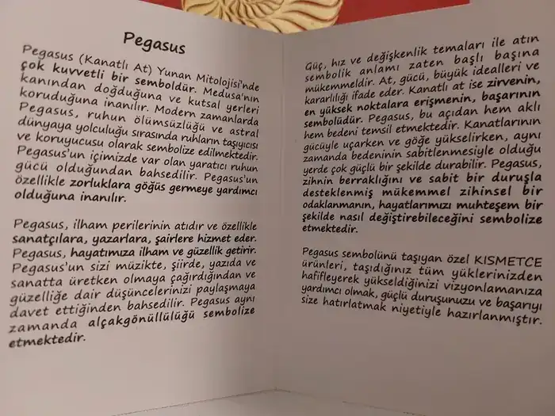
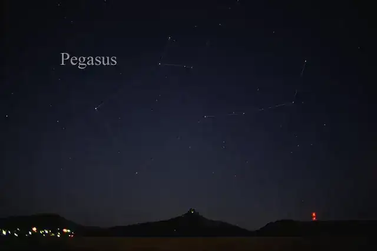
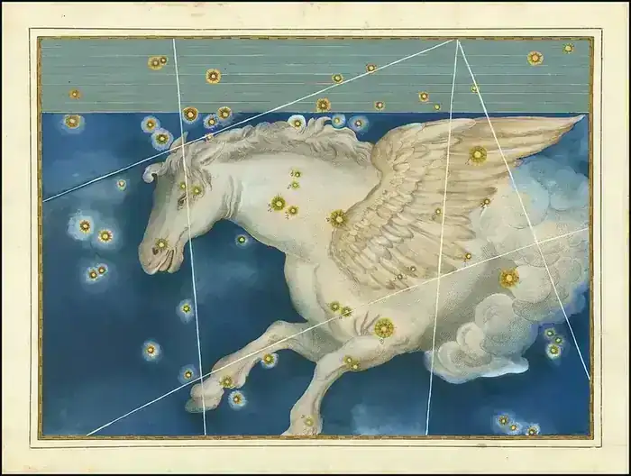

What Pegasus does
Pegasus is commercial spyware sold by the Israeli firm NSO Group to governments. Early versions used links that had to be opened; later versions used 'zero-click' exploits — a crafted iMessage or WhatsApp message that compromises the device without interaction.
Maps, diagrams and images






Once installed, it can read messages, capture keystrokes, record calls, exfiltrate photos and location, and turn on the microphone. Apple patched the FORCEDENTRY exploit in 2021 after researchers at the Citizen Lab identified it.
The Pegasus Project
In July 2021, seventeen media organisations published a collaborative investigation of 50,000 phone numbers selected for a leaked client list. Forensic analysis confirmed infection or attempted infection on phones belonging to journalists, human-rights defenders and politicians.
The reporting established three things: the spyware existed and worked as described; it was sold to states with poor human-rights records; and the targeting included people whose only crime was reporting or litigating.
Documented: the capability, the customers, and specific infected devices confirmed by forensic analysis. NSO was placed on the U.S. Entity List in 2021 and Apple sued it in the same year.
Not documented: that every number on the list was targeted, or infected. A number in a client system is a selector, not proof of an attack — an important distinction the coverage often dropped.
Not established: the full customer list, or which governments ran which operations. NSO has said it sells only to vetted state agencies and has cancelled contracts; independent verification is not possible.
Why it belongs here
Because it is a case where a conspiracy theory — governments secretly reading activists' phones — turned out to be substantially true, with the caveat that the mechanism was commercial rather than a single global plot.
It also shows the archive's rule in reverse: the documented version of a frightening claim is usually narrower and more specific than the rumour, and it is more useful because it can be acted on. Apple's patch, the Entity List designation and the lawsuits are consequences of the specific finding, not of the mood.
Sources for this page
- Amnesty International, the Pegasus Project forensic methodswww.amnesty.org
- Citizen Lab, FORCEDENTRY and the Apple patchescitizenlab.ca
- U.S. Commerce Department, NSO Group added to the Entity List (2021)www.commerce.gov
- Wikipedia, “Pegasus (spyware)” — capability, customers, reportingen.wikipedia.org
Open resources on this topic
- BookPegasus Remounts an Anthology of Cadet Verse — William P. Yarborough · 1936 (Internet Archive, free to read)
- Bookpegasus-tool (Internet Archive, free to read)
- BookPuck on Pegasus — Henry Cholmondeley -Pennell, Hablot Knight Browne, John Leec · 1862 (Internet Archive, free to read)
- PapersOpen-access articles: DOAJ · PubMed Central · Internet Archive Scholar
- BooksPublic-domain and borrowable copies: Open Library · Project Gutenberg · Google Books
Cite this page
Momin, S. (2026). Pegasus. The Larger World Archive. https://drsamonline.github.io/LARGE_GLOBE/pegasus-spyware.htmlMomin, Sohil. “Pegasus.” The Larger World Archive, 2026, https://drsamonline.github.io/LARGE_GLOBE/pegasus-spyware.html.Momin, Sohil. “Pegasus.” The Larger World Archive, 2026. https://drsamonline.github.io/LARGE_GLOBE/pegasus-spyware.html.@misc{pegasus2026pegasus,
author = {Momin, Sohil},
title = {Pegasus},
year = {2026},
howpublished = {The Larger World Archive},
url = {https://drsamonline.github.io/LARGE_GLOBE/pegasus-spyware.html},
note = {Last reviewed 20 November 2026}
}Last reviewed 20 November 2026 · Corrections policy · this page is not peer reviewed